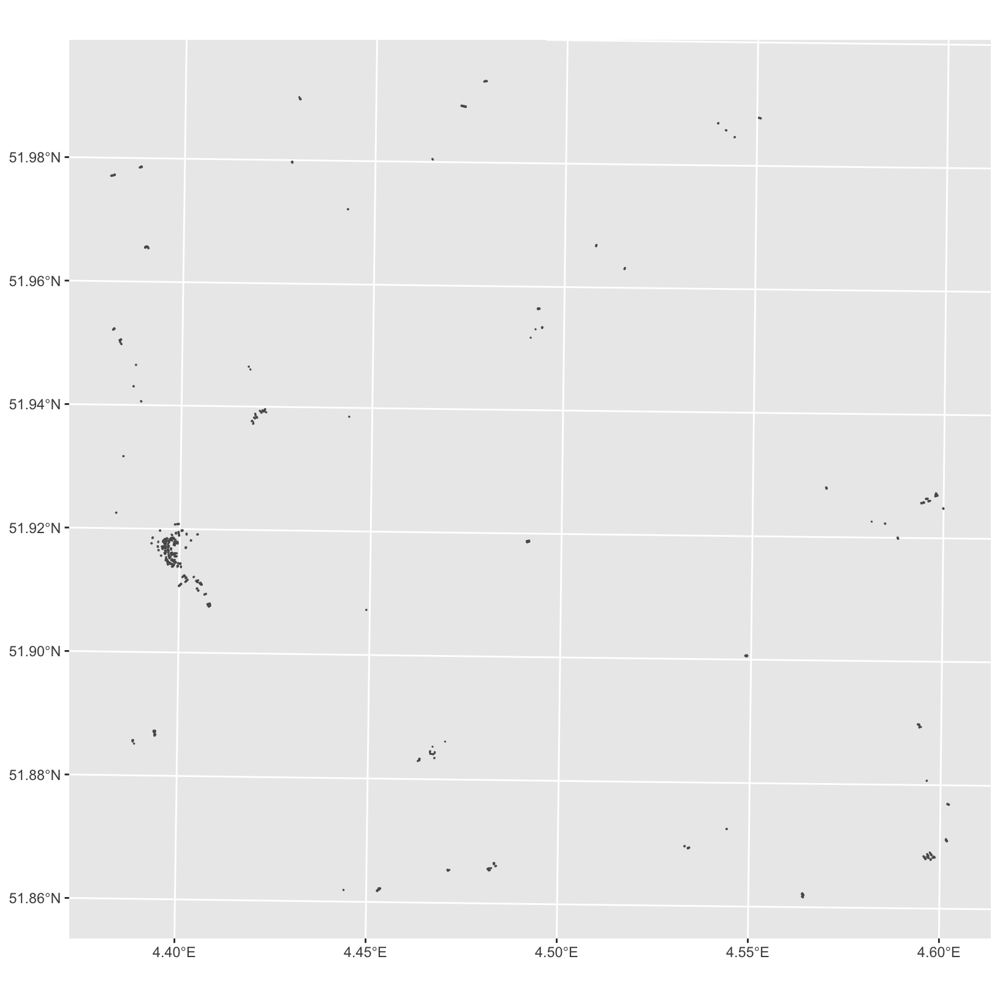
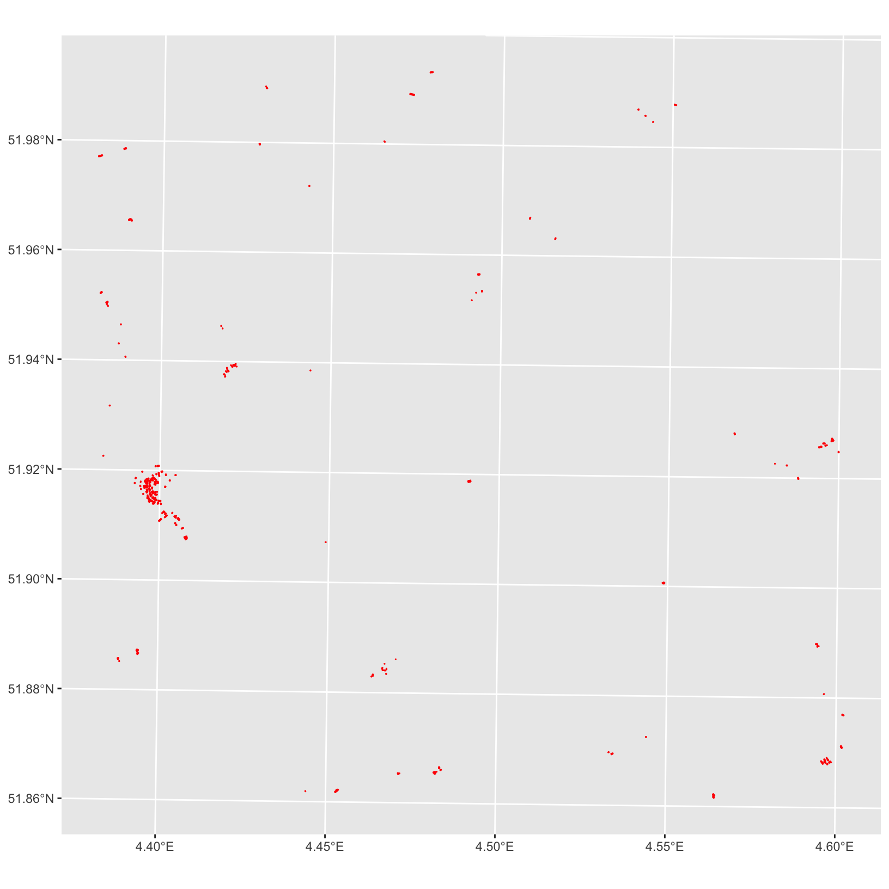
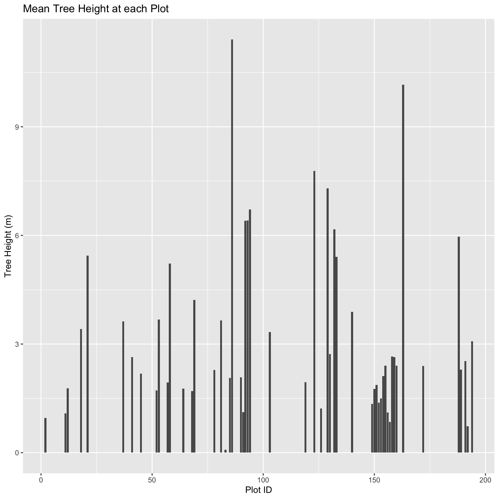

Demonstrate how to import, select, and visualise OSM vector data
Open Street Map (OSM)
is a collaborative project which aims at mapping the world and sharing geospatial data in an open way.
OSM 🗺
Anyone can contribute, by mapping geographical objects their encounter by
mapping spatial features (e.g. buildings or roads), from located device or satellite imagery.
adding topical information on existing map objects (their name, function, capacity, etc.)
OSM 🗺
This information is then validated by other users and eventually added to the common “map” or information system.
This ensures that the information is accessible, open, verified, accurate and up-to-date. cf. HOT: Humanitarian OpenStreetMap Team
OSM 🗺
The geospatial data underlying this interface is made of geometrical objects (i.e. points, lines, polygons) and their associated tags (#building #height, #road #secondary #90kph, etc.).
How to extract geospatial data from Open Street Map with R?
The first thing to do is to define the area within which you want to retrieve data, aka the bounding box. This can be defined easily using a place name and the function getbb() from the package osmdata.
“This function uses the free Nominatim API provided by OpenStreetMap to find the bounding box (bb) associated with place names.”
Because there are different responses from the API query, corresponding to different objects at the same location, or different objects are different locations.
Extracting OSM features
A feature in the OSM language is a category or tag of a geospatial object. Features are described by general keys (e.g. “building”, “boundary”, “landuse”, “highway”) Features are decomposed into sub-categories (values) such as “farm”, “hotel” or “house” for buildings, “motorway”, “secondary” and “residential” for highway. This determines how they are represented on the map.
Extracting OSM features
We use the function opq() that stands for “overpass query”.
x <-opq(bbox = bb) |>add_osm_feature(key ='building') |>osmdata_sf ()
What is this x object made of?
Extracting OSM features
head(x$osm_polygons)
It is a table of all the buildings contained in the bounding box, which gives us their OSM id, their geometry and a range of attributes, such as their name, building material, building date, etc.
The completion level of this table depends on user contributions and open resources (here for instance: BAG, different in other countries).
Mapping attributes
Case Study: we are interested in mapping urbanisation in Delft in the 20th and 21st centuries. We need to look into specific attributes:
the building age of buildings
with a subset of buildings from after 1900
within the Delft bounding box
Projections
First, we are going to select the polygons and reproject them with the Amersfoort/RD New projection, suited for maps centered on the Netherlands.
Then we create a variable which a threshold at 1900. Every date prior to 1900 will be recoded 1900, so that buildings older than 1900 will be represented with the same shade.
Then we use the ggplot function to visualise the buildings by age. The specific function to represent information as a map is geom_sf(). The rest works like other graphs and visualisation, with aes() for the aesthetics.
This centre-periphery and sectoral urban development is quite common. Now for a less typical example, can you reproduce this map for the city of Rotterdam. But instead of pre-1900 building, we want to look at post-war buildings.
It will take some time to extract all buildings, so we will check the result after the coffee break.
It contains a large set of functions to achieve all the operations on vector spatial data for which you might use traditional GIS software: change the coordinate system, join layers, intersect or unit polygons, create buffers and centroids, etc. cf. the sfcheatsheet.
We are going to go through some of these basics with the case study of Rotterdam buildings.
Conservation in Rotterdam 🏦
Let’s focus on really old building and imagine we’re in charge of their conservation. We want to know how much of the city would be affected by a non-construction zone of 500m around pre-1800 buildings.
Let’s select them and see where they are.
Conservation in Rotterdam 🏢
old <-1800# year prior to which you consider a building oldold_buildings <- buildings |>filter(start_date <= old)ggplot(data = old_buildings) +geom_sf()

⏰Challenge: make it more visible!
03:00
Make the buildings show in red on the “map”
Solution (one of them)
ggplot(data=old_buildings) +geom_sf(colour="red")

Basic GIS operations
As conservationists, we want to create a zone around historical buildings where building regulation will have special restrictions to preserve historical buildings.
Buffer
Let’s say this zone should be 500 meters. In GIS terms, we want to create a buffer around polygons. The corresponding function sf is st_buffer, with 2 arguments:
Now, we have a lot of overlapping buffers. We would rather create a unique conservation zone rather than overlapping ones in that case. So we have to fuse (or dissolve) the overlapping buffers into one polygon. This operation is called union in sf and the corresponding function is st_union.
We also use st_cast() to explicit the type of the resulting object (POLYGON instead of the default MULTIPOLYGON), st_as_sf() to transform the polygon into an sf object.
Centroids
For the sake of visualisation speed, we would like to represent buildings by a single point (for instance: their geometric centre) rather than their actual footprint.
This operation means defining their centroid and the corresponding function is st_centroid.
Now what we would like to distinguish conservation areas based on the number of historic buildings they contain. In GIS terms, we would like to know how many centroids each fused buffer polygon contains. This operation means intersecting the layer of polygons with the layer of points and the corresponding function is st_intersection.
Conservation rules have changed! The historical threshold now applies to all pre-war buildings, but the distance to these building is reduced to 100 meters. Can you map the number of all buildings per 100m fused buffer?
We have seen how to create spatial buffers and centroids, how to intersect vector data and how retrieve the area of polygons.
In short:
Use the sf package to treat geospatial data
Use the st_* functions for basic GIS operations
Use the ggplot package to map the results
Session 4c: Manipulating rater and vector data
How can I crop raster objects to vector objects, and extract the summary of raster pixels?
Objectives & Keypoints:
Crop a raster to the extent of a vector layer.
Extract values from a raster that correspond to a vector file overlay.
Use the crop() function to crop a raster object.
Use the extract() function to extract pixels from a raster object that fall within a particular extent boundary.
Introduction
We often work with spatial layers that have different spatial extents. The spatial extent of a shapefile or R spatial object represents the geographic “edge” or location that is the furthest north, south east and west. Thus is represents the overall geographic coverage of the spatial object.
Image Source: National Ecological Observatory Network (NEON)
Introduction
The graphic below illustrates the extent of several of the spatial layers that we have worked with in this workshop:
Image Source: DCC
Area of interest (AOI) – blue
Roads and trails – purple
Vegetation plot locations (marked with white dots)– black
A canopy height model (CHM) in GeoTIFF format – green
Introduction
Frequent use cases of cropping a raster file include
reducing file size
creating maps.
Sometimes we have a raster file that is much larger than our study area or area of interest. It is often more efficient to crop the raster to the extent of our study area to reduce file sizes as we process our data.
Cropping a raster can also be useful when creating pretty maps so that the raster layer matches the extent of the desired vector layers.
Import the raster
We import a DSM (Digital Surface Model) and a DTM (Digital Terrain Model) of TU-Delft.
The difference between the two altitudes gives us a CHM, a Canopy Height Model.
st_as_sfc() is a useful function to convert files to an sf format.
Crop a Raster Using Vector Extent
We can use the crop() function to crop a raster to the extent of another spatial object. To do this, we need to specify the raster to be cropped and the spatial object that will be used to crop the raster. R will use the extent of the spatial object as the cropping boundary.
To illustrate this, we will crop the Canopy Height Model (CHM) to only include the area of interest (AOI). Let’s start by plotting the full extent of the CHM data and overlay where the AOI falls within it. The boundaries of the AOI will be colored blue, and we use fill = NA to make the area transparent.
ggplot() +geom_raster(data = CHM_TUD_df, aes(x = x, y = y, fill = layer)) +scale_fill_gradientn(name ="Canopy Height", colors =terrain.colors(10)) +geom_sf(data = oai_boundary_tudlib, color ="blue", fill =NA) +coord_sf()
Crop a Raster Using Vector Extent
Now that we have visualized the area of the CHM we want to subset, we can perform the cropping operation. We are going to use the crop() function from the raster package to create a new object with only the portion of the CHM data that falls within the boundaries of the AOI.
Now we can plot: - the cropped CHM data - a boundary box showing the full CHM extent.
However, remember, since this is raster data, we need to convert to a data frame in order to plot using ggplot.
Crop a Raster Using Vector Extent
To get the boundary box from CHM, the st_bbox() will extract the 4 corners of the rectangle that encompass all the features contained in this object. The st_as_sfc() converts these 4 coordinates into a polygon that we can plot:
CHM_TUD_Cropped_df <-as.data.frame(CHM_TUD_Cropped, xy =TRUE)ggplot() +geom_sf(data =st_as_sfc(st_bbox(CHM_TUD)), fill ="green",color ="green", alpha = .2) +geom_raster(data = CHM_TUD_Cropped_df,aes(x = x, y = y, fill = layer)) +scale_fill_gradientn(name ="Canopy Height", colors =terrain.colors(10)) +coord_sf()
Crop a Raster Using Vector Extent
The plot shows that the full CHM extent (plotted in green) is much larger than the resulting cropped raster. Our new cropped CHM now has the same extent as the aoi_boundary_HARV object that was used as a crop extent (blue border below).
Crop a Raster Using Vector Extent
ggplot() +geom_sf(data =st_as_sfc(st_bbox(CHM_TUD)), fill ="green",color ="green", alpha = .2) +geom_raster(data = CHM_TUD_Cropped_df,aes(x = x, y = y, fill = layer)) +scale_fill_gradientn(name ="Canopy Height", colors =terrain.colors(10)) +coord_sf()
This plot shows that the full CHM extent (plotted in green) is much larger than the resulting cropped raster.
Crop a Raster Using Vector Extent
We can look at the extent of all of our other objects for this field site.
The original:
st_bbox(CHM_TUD)
The cropped one:
st_bbox(CHM_TUD_Cropped)
The area of interest:
st_bbox(oai_boundary_tudlib)
Our plot location extent is not the largest but is larger than the AOI Boundary.
Extract Raster Pixels Values Using Vector Polygons
Often we want to extract values from a raster layer for particular locations - for example, plot locations that we are sampling on the ground.
We can extract all pixel values within 20m of our x,y point of interest. These can then be summarized into some value of interest (e.g. mean, maximum, total).
Image Source: National Ecological Observatory Network (NEON)
Extract Raster Pixels Values Using Vector Polygons
To do this in R, we use the extract() function. The extract() function requires:
The raster that we wish to extract values from,
The vector layer containing the polygons that we wish to use as a boundary or boundaries.
We can tell it to store the output values in a data frame using df = TRUE. (This is optional, the default is to return a list, NOT a data frame.)
We will begin by extracting all canopy height pixel values located within our oai_boundary_tudlib polygon which surrounds the TU Delft Library.
tree_height <-extract(x = CHM_TUD, y =st_as_sf(oai_boundary_tudlib),df =TRUE)str(tree_height)
When we use the extract() function, R extracts the value for each pixel located within the boundary of the polygon being used to perform the extraction - in this case the oai_boundary_tudlib object (a single polygon). Here, the function extracted values from 621,642 pixels.
Extract Raster Pixels Values Using Vector Polygons
We can create a histogram of tree height values within the boundary to better understand the structure or height distribution of trees at our site. We will use the column layer from our data frame as our x values, as this column represents the tree heights for each pixel.
ggplot() +geom_histogram(data = tree_height, aes(x = layer)) +ggtitle("Histogram of CHM Height Values (m)") +xlab("Tree Height") +ylab("Frequency of Pixels")
We can also use the summary() function to view descriptive statistics including min, max, and mean height values. These values help us better understand vegetation at our field site.
summary(tree_height$layer)
Summarize Extracted Raster Values
We often want to extract summary values from a raster.
We can tell R the type of summary statistic we are interested in using the fun = argument.
Let’s extract a mean height value for our AOI. Because we are extracting only a single number, we will not use the df = TRUE argument.
mean_tree_height_AOI <-extract(x = CHM_TUD, y =st_as_sf(oai_boundary_tudlib), fun = mean)head(mean_tree_height_AOI)
It appears that the mean height value, extracted from our LiDAR data derived canopy height model is 4.3 meters.
Extract Data using x,y Locations
We can also extract pixel values from a raster by defining a buffer or area surrounding individual point locations using the extract() function.
To do this we define the summary argument (fun = mean) and the buffer distance (buffer = 20) which represents the radius of a circular region around each point.
By default, the units of the buffer are the same units as the data’s CRS. All pixels that are touched by the buffer region are included in the extract.
Let’s put this into practice by figuring out the mean tree height in the 20m around the tower location (point_Delft). Because we are extracting only a single number, we will not use the df = TRUE argument.
⏰ Challenge: Extract Raster Height Values For Plot Locations
10:00
Use the leisure locations object (point_Delft) to extract an average tree height for the area within 20m of each playground and picnic table in the study area. Because there are multiple playgrounds and picnic tables, there will be multiple averages returned, so the df = TRUE argument should be used.
Create a plot showing the mean tree height of each area.

Solution
leisure_locations_selection <- point_Delft |>filter(leisure %in%c("playground", "picnic_table"))# extract data at each plot locationmean_tree_height_plots_TUD <-extract(x = CHM_TUD,y = leisure_locations_selection,buffer =20,fun = mean,df =TRUE)# view datahead(mean_tree_height_plots_TUD)
Visualisation of the results:
ggplot(data = mean_tree_height_plots_TUD, aes(ID, layer)) +geom_col() +ggtitle("Mean Tree Height at each Plot") +xlab("Plot ID") +ylab("Tree Height (m)")
Summary and keypoints
We have seen how to crop a raster to the extent of a vector layer and how to extract values from a raster that correspond to a vector file overlay.
In short:
Use the crop() function to crop a raster object.
Use the extract() function to extract pixels from a raster object that fall within a particular extent boundary.